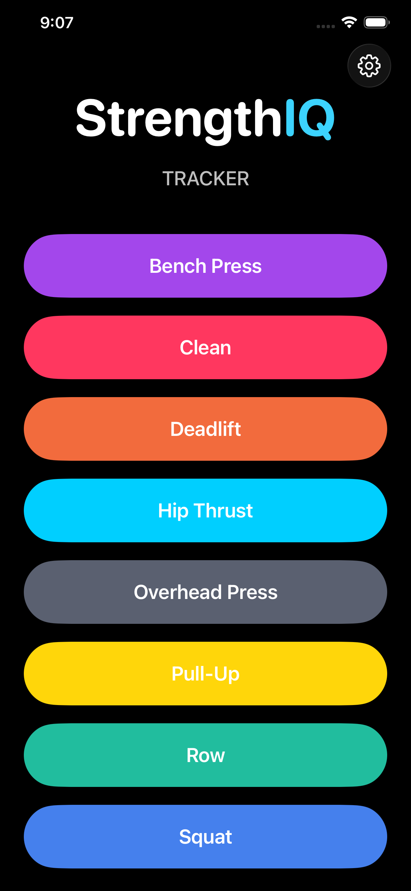
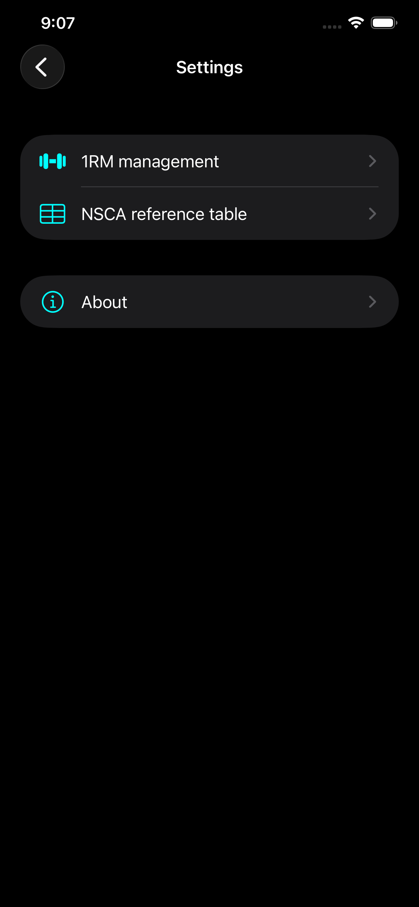
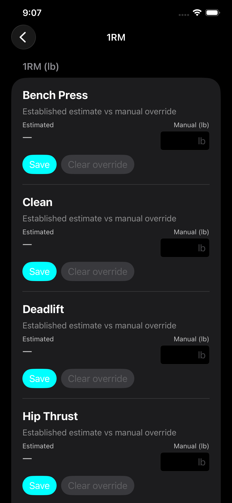
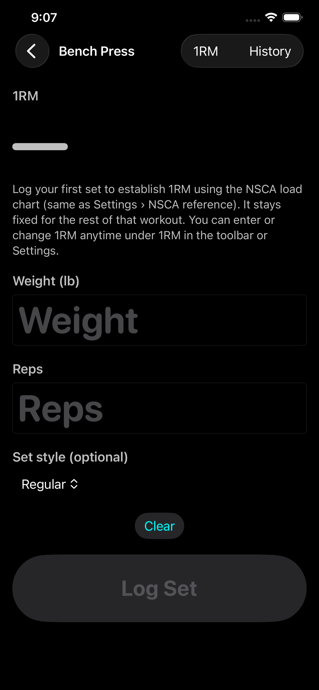

See the app in action
StrengthIQ keeps the interface fast and focused, from the exercise picker to 1RM tools and set logging.




Everything StrengthIQ includes
Exercise system
- Eight fixed exercises: deadlift, bench, squat, row, hip thrust, pull-up, clean, overhead press.
- Distinct accent color per exercise for fast visual recognition.
- Automatic migration of legacy labels from older app builds where applicable.
Deadlift
Bench
Squat
Row
Hip Thrust
Pull-up
Clean
Overhead Press
Barbell logging capabilities
- Track weight (lb), reps, and optional percent of 1RM.
- Remembered lift-type menus by exercise for cleaner repeated logging.
- Optional set-style controls where relevant by movement.
- NSCA-style suggested load from % of 1RM with 5 lb rounding and manual override.
- Estimated 1RM from logged sets based on NSCA chart logic, rounded to nearest 5 lb.
- Session 1RM is created from the first set and can rise if later sets imply a higher e1RM.
Pull-up specific tracking
- No 1RM or NSCA percentage UI to keep pull-up workflows focused.
- Log reps over time with timestamped history rows.
- Capture variant and eccentric emphasis per set.
- Track added weight for weighted pull-up sessions.
Standard/Strict
Chin-up
Wide
Close
Commando
Weighted
Chest-to-bar
Settings and progression tools
- Manual 1RM overrides for 1RM-tracked lifts (pull-up excluded).
- Saved 1RM values are normalized to nearest 5 lb for consistency.
- Integrated NSCA reference table from Settings.
- History views for each exercise to review progression chronologically.
Simple flow, fast logging
- Home: pick an exercise from capsule buttons, then jump into logging.
- Log Set: enter reps, load, and movement-specific fields with remembered options.
- History: open per-exercise chronological logs anytime from the navigation bar.
- Settings: manage manual 1RM values and open NSCA references.
The UI structure mirrors IntervalIQ navigation and styling patterns for consistent training-app ergonomics.
Privacy-first by design
- Workout data is stored only on your iPhone.
- No app-operated cloud storage in the current release.
- No selling, renting, licensing, or advertising use of your workout logs.
- No third-party analytics or ad SDK integration in this release.
- Data can be retained via your own Apple backup settings, not through app servers.
StrengthIQ is built for straightforward personal tracking: local storage, transparent data handling, and no account setup required.
Full policy and contact details are available in PRIVACY.md.
Built for modern iOS
- Native SwiftUI interface for iPhone.
- SwiftData persistence for on-device reliability.
- Designed for Xcode 15+ development workflow and iOS 17 deployment target.
- App identity: StrengthIQ (`com.strengthiq.StrengthIQ`).